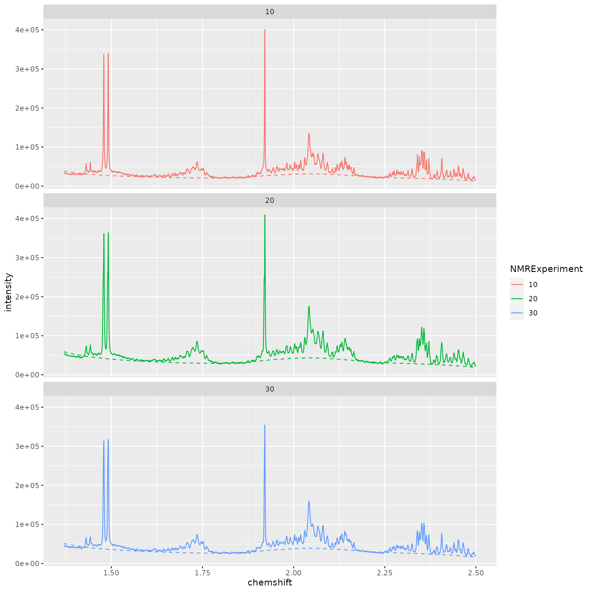
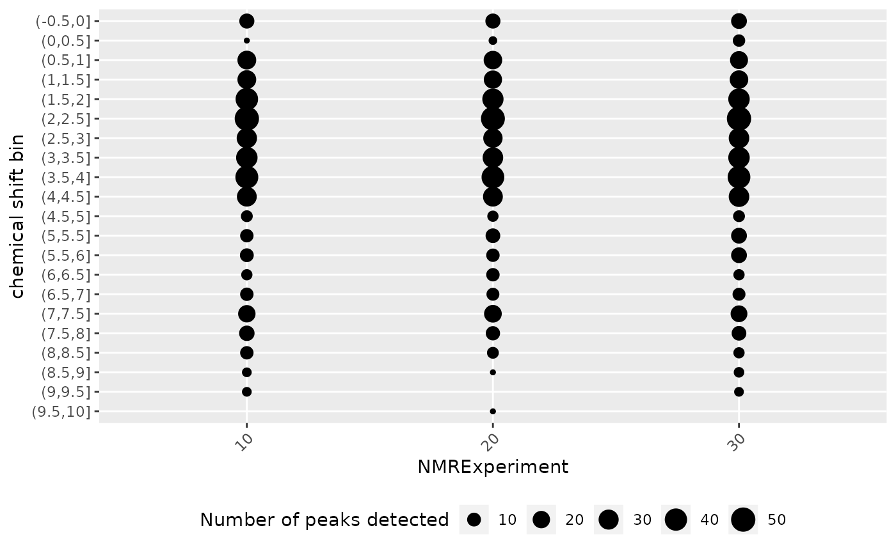
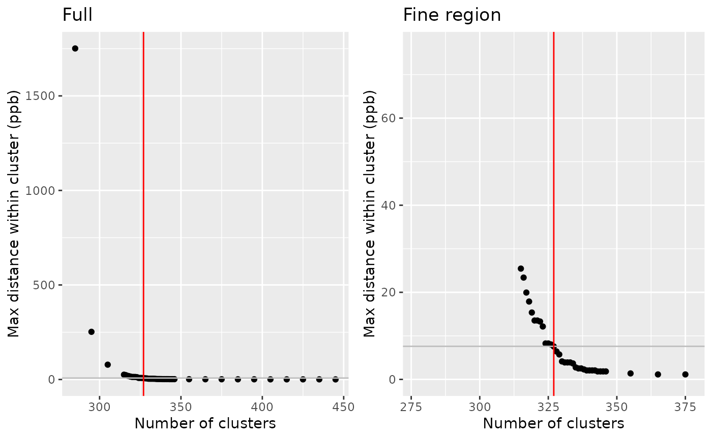
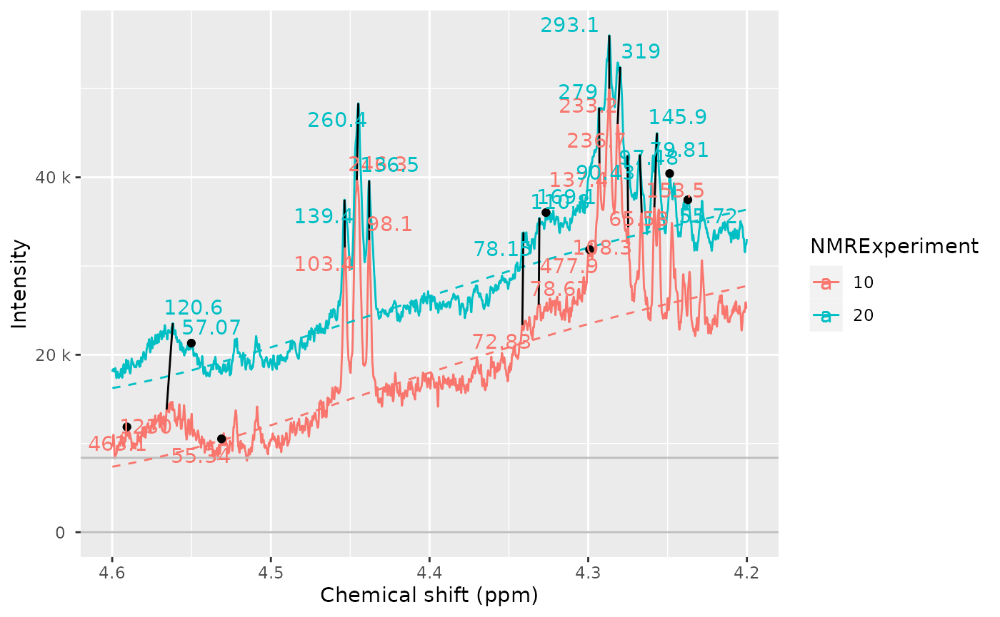

Introduction to AlpsNMR
AlpsNMR authors
2022-06-23
Source:vignettes/Vig01-introduction-to-alpsnmr.Rmd
Vig01-introduction-to-alpsnmr.RmdAbstract
An introduction to the AlpsNMR package, showing the most relevant functions and a proposed workflow. This includes loading bruker NMR samples, adding sample annotations, preprocessing the spectra, detecting outliers, detecting peaks, aligning the samples and integrating the peaks to build a peak table.
Getting started
The AlpsNMR package has most of its functions prefixed
with nmr_. The main reason for this is to avoid conflicts
with other packages. Besides, it helps for autocompletion: Most coding
environments such as RStudio will let you see most of the function names
by typing nmr_ followed by pressing the tab key.
This vignette assumes some basic knowledge of NMR and data analysis, and some basic R programming.
We will start by loading AlpsNMR along some convenience
packages:
##
## Attaching package: 'dplyr'## The following objects are masked from 'package:stats':
##
## filter, lag## The following objects are masked from 'package:base':
##
## intersect, setdiff, setequal, union## Loading required package: future##
## Attaching package: 'AlpsNMR'## The following object is masked from 'package:stats':
##
## filterEnable parallellization
This package is able to parallellize several functions through the
use of the BiocParallel package. Whether to parallelize or
not is left to the user that can control the parallellization
registering backends. Please check
vignette("Introduction_To_BiocParallel", package = "BiocParallel").
Data: The MeOH_plasma_extraction dataset
To explore the basics of the AlpsNMR package, we have included four NMR samples acquired in a 600 MHz Bruker instrument bundled with the package. The samples are pooled quality control plasma samples, that were extracted with methanol. They only contain small molecules.
If you have installed this package, you can obtain the directory where the samples are with the command:
MeOH_plasma_extraction_dir <- system.file("dataset-demo", package = "AlpsNMR")
MeOH_plasma_extraction_dir## [1] "/__w/_temp/Library/AlpsNMR/dataset-demo"The demo directory includes three zipped Bruker samples and a dummy Excel metadata file:
list.files(MeOH_plasma_extraction_dir)## [1] "10.zip" "20.zip" "30.zip"
## [4] "dummy_metadata.xlsx" "README.txt"Since these are quality control samples, the metadata is a dummy table:
MeOH_plasma_extraction_xlsx <- file.path(MeOH_plasma_extraction_dir, "dummy_metadata.xlsx")
annotations <- readxl::read_excel(MeOH_plasma_extraction_xlsx)
annotations## # A tibble: 3 × 3
## NMRExperiment SubjectID TimePoint
## <chr> <chr> <chr>
## 1 10 Ana baseline
## 2 20 Ana 3 months
## 3 30 Elia baselineLoading samples
The function to read samples is called
nmr_read_samples(). It expects a character vector with the
samples to load that can be paths to directories of Bruker format
samples or paths to JDX files.
Additionally, this function can filter by pulse sequences (e.g. load only NOESY samples) or loading only metadata.
zip_files <- fs::dir_ls(MeOH_plasma_extraction_dir, glob = "*.zip")
zip_files## /__w/_temp/Library/AlpsNMR/dataset-demo/10.zip
## /__w/_temp/Library/AlpsNMR/dataset-demo/20.zip
## /__w/_temp/Library/AlpsNMR/dataset-demo/30.zip
dataset <- nmr_read_samples(sample_names = zip_files)
dataset## An nmr_dataset (3 samples)If your samples happen to be in different folders per class, AlpsNMR provides convenience functions to read them as well. With this example:
- your_dataset/
+ control/
* 10/
* 20/
* 30/
+ mutated/
* 10/
* 20/
* 30/You could use:
dataset <- nmr_read_samples_dir(c("your_dataset/control", "your_dataset/mutated"))
datasetIf after reading the ?nmr_read_samples page you still
have issues, feel free to open an issue at https://github.com/sipss/AlpsNMR/issues and ask for
clarification.
Adding annotations
We can embed the external annotations we loaded above into the dataset:
dataset <- nmr_meta_add(dataset, metadata = annotations, by = "NMRExperiment")And retrieve them from the dataset:
nmr_meta_get(dataset, groups = "external")## # A tibble: 3 × 3
## NMRExperiment SubjectID TimePoint
## <chr> <chr> <chr>
## 1 10 Ana baseline
## 2 20 Ana 3 months
## 3 30 Elia baselineIf you want to learn more about sample metadata (including
acquisition and FID processing parameters), as well as more complex ways
of adding annotations, check out the
vignette("Vig02-handling-metadata-and-annotations", package = "AlpsNMR").
Interpolation
1D NMR samples can be interpolated together, in order to arrange all the spectra into a matrix, with one row per sample. Here we choose the range of ppm values that we want to include in further analyses.
dataset <- nmr_interpolate_1D(dataset, axis = c(min = -0.5, max = 10))If the axis = NULL then the ppm axis is autodetected
from the samples.
See nmr_interpolate_1D() for further reference on the
axis options.
Plotting samples
Plotting many spectra with so many points is quite expensive so it is possible to include only some regions of the spectra or plot only some samples.

See
vignette("Vig03-plotting-samples", package="AlpsNMR") for
more advanced plot options, or having interactive plots.
Exclude regions
Some regions can easily be excluded from the spectra with
nmr_exclude_region():
regions_to_exclude <- list(water = c(4.6, 5), methanol = c(3.33, 3.39))
dataset <- nmr_exclude_region(dataset, exclude = regions_to_exclude)
plot(dataset, chemshift_range = c(4.2, 5.5))
Filter samples
Maybe we just want to analyze a subset of the data, e.g., only a class group or a particular gender. We can filter some samples according to their metadata as follows:
samples_10_20 <- filter(dataset, SubjectID == "Ana")
nmr_meta_get(samples_10_20, groups = "external")## # A tibble: 2 × 3
## NMRExperiment SubjectID TimePoint
## <chr> <chr> <chr>
## 1 10 Ana baseline
## 2 20 Ana 3 monthsRobust PCA for outlier detection
The AlpsNMR package includes robust PCA analysis for outlier detection.
pca_outliers_rob <- nmr_pca_outliers_robust(dataset, ncomp = 3)
nmr_pca_outliers_plot(dataset, pca_outliers_rob)Samples with greater QResiduals and Tscores than the threshold defined by the red line are candidates for further exploration and exclusion. With this small dataset, there is not much to see.
Baseline removal
Spectra may display an unstable baseline, specially when processing blood/fecal samples.
The peak detection and integration algorithms benefit from having an estimation of the baseline, so it is advisable to compute it first and check it fits as expected.
See before:


Estimate the baseline:
dataset <- nmr_baseline_estimation(dataset, lambda = 9, p = 0.01)And after:
# TODO: Simplify this plot
spectra_to_plot <- tidy(dataset, chemshift_range = c(1.37, 2.5))
baseline_to_plot <- tidy(dataset, chemshift_range = c(1.37, 2.5), matrix_name = "data_1r_baseline")
ggplot(mapping = aes(x = chemshift, y = intensity, color = NMRExperiment)) +
geom_line(data = spectra_to_plot) +
geom_line(data = baseline_to_plot, linetype = "dashed") +
facet_wrap(~NMRExperiment, ncol = 1)
# TODO: Simplify this plot
spectra_to_plot <- tidy(dataset, chemshift_range = c(3.5, 3.8))
baseline_to_plot <- tidy(dataset, chemshift_range = c(3.5, 3.8), matrix_name = "data_1r_baseline")
ggplot(mapping = aes(x = chemshift, y = intensity, color = NMRExperiment)) +
geom_line(data = spectra_to_plot) +
geom_line(data = baseline_to_plot, linetype = "dashed") +
facet_wrap(~NMRExperiment, ncol = 1)Peak detection
The peak detection is performed on short spectra segments using a continuous wavelet transform. Peaks below a threshold intensity are automatically discarded.
Our current approach relies on the use of the baseline threshold
(baselineThresh) automatically calculated (see
?nmr_baseline_threshold) and the Signal to Noise Threshold
(SNR.Th) to discriminate valid peaks from noise.
See ?nmr_detect_peaks for more information.
baselineThresh <- nmr_baseline_threshold(dataset, range_without_peaks = c(9.5, 10))
nmr_baseline_threshold_plot(dataset, baselineThresh)
peak_list_initial <- nmr_detect_peaks(
dataset,
nDivRange_ppm = 0.1,
scales = seq(1, 16, 2),
baselineThresh = baselineThresh,
SNR.Th = 3
)We can get an overview of the number of peaks we detect on each sample and each chemical shift region:
nmr_detect_peaks_plot_overview(peak_list_initial)
We can explore in a more detailed way the detected peaks:
nmr_detect_peaks_plot(dataset, peak_list_initial, NMRExperiment = "10", chemshift_range = c(3, 3.3))Let’s the detected peaks in a smaller region across samples:
peak_list_in_range <- filter(peak_list_initial, ppm > 3.22, ppm < 3.24)
peak_list_in_range## # A tibble: 6 × 11
## peak_id NMRExperiment sample_idx ppm pos intensity ppm_infl_min
## <chr> <chr> <int> <dbl> <dbl> <dbl> <dbl>
## 1 Peak0236 10 1 3.23 16281 239459. 3.23
## 2 Peak0237 10 1 3.24 16308 358753. 3.24
## 3 Peak0738 20 2 3.23 16283 291094. 3.23
## 4 Peak0739 20 2 3.24 16309 399656. 3.24
## 5 Peak1248 30 3 3.23 16281 243670. 3.23
## 6 Peak1249 30 3 3.24 16308 464835. 3.24
## # … with 4 more variables: ppm_infl_max <dbl>, gamma_ppb <dbl>, area <dbl>,
## # norm_rmse <dbl>
nmr_detect_peaks_plot_peaks(
dataset,
peak_list_initial,
peak_ids = peak_list_in_range$peak_id,
caption = paste("{peak_id}",
"(NMRExp.\u00A0{NMRExperiment},",
"gamma(ppb)\u00a0=\u00a0{gamma_ppb},",
"\narea\u00a0=\u00a0{area},",
"nrmse\u00a0=\u00a0{norm_rmse})")
)
peak_list_initial_accepted <- peaklist_accept_peaks(
peak_list_initial,
dataset,
area_min = 50,
keep_rejected = FALSE,
verbose = TRUE
)## Acceptance report
## ℹ 825/1474 peaks accepted. (56%)
## ℹ Removing 649 peaksSpectra alignment
Once we have a preliminary peak list, we can align the spectra using
the nmr_align() function. We expect shifts between the
spectra, this becomes necessary so we can cluster the peaks correctly
afterwards and build a peak table.
The alignment process takes several parameters, including:
NMRExp_ref: An NMRExperiment with a reference sample. Usually it should be a pool of all samples if it is available. Otherwise, you can usenmr_align_find_ref()to find a sample. Depending on how heterogeneous your dataset is, there may not be a good reference sample (even if the function picks one, the alignment might not succeed), so please always check the results afterwards.maxShift_ppm: The maximum shift allowed when aligning the spectra.acceptLostPeak: Set it toTRUEif you want to accept some peaks getting lost during the alignment process. Since the peak detection is never perfect, it is reasonable to accept some lost peaks.
NMRExp_ref <- nmr_align_find_ref(dataset, peak_list_initial_accepted)
message("Your reference is NMRExperiment ", NMRExp_ref)## Your reference is NMRExperiment 20
dataset_align <- nmr_align(
nmr_dataset = dataset,
peak_data = peak_list_initial_accepted,
NMRExp_ref = NMRExp_ref,
maxShift_ppm = 0.0015,
acceptLostPeak = TRUE
)Compare the dataset before and after alignment, to verify the quality of the alignment:


cowplot::plot_grid(
plot(dataset, chemshift_range = c(3.22, 3.25)) + theme(legend.position = "none"),
plot(dataset_align, chemshift_range = c(3.22, 3.25)) + theme(legend.position = "none")
)
Normalization
With the spectra correctly aligned, you can use spectra normalization techniques. We normalize after alignment because some of the normalization techniques are sensitive to misalignments.
There are multiple normalization techniques available. The most
strongly recommended is the Probabilistic Quantile Normalization
(pqn), but it requires more samples for its internal
estimations to be reliable, as it needs a computation of the median
spectra. Nevertheless, it is possible to compute it:
dataset_norm <- nmr_normalize(dataset_align, method = "pqn")## Warning: There are not enough samples for reliably estimating the median spectra
## ℹ The Probabalistic Quotient Normalization requires several samples to compute the median spectra. Your number of samples is low
## ℹ Review your peaks before and after normalization to ensure there are no big distortionsThe normalization essentially computes a normalization factor for each sample.
The plot shows the dispersion with respect to the median of the normalization factors, and can highlight samples with abnormally large or small normalization factors.
normalization_info <- nmr_normalize_extra_info(dataset_norm)
normalization_info$norm_factor## NMRExperiment norm_factor norm_factor_norm
## 1 10 0.8477963 0.8477963
## 2 20 1.1417341 1.1417341
## 3 30 1.0000000 1.0000000
normalization_info$plotWe can confirm sample 20 is now slightly more diluted:
to_plot <- dplyr::bind_rows(
tidy(dataset_align, NMRExperiment = "20", chemshift_range = c(2,2.5)) |>
mutate(Normalized = "No"),
tidy(dataset_norm, NMRExperiment = "20", chemshift_range = c(2,2.5)) |>
mutate(Normalized = "Yes"),
)
ggplot(data = to_plot, mapping = aes(x = chemshift, y = intensity, color = Normalized)) +
geom_line() +
scale_x_reverse() +
labs(y = "Intensity", x = "Chemical shift (ppm)",
caption = "The normalization slightly diluted experiment 20")
And all samples are more homogeneous now:
cowplot::plot_grid(
plot(dataset_align, chemshift_range = c(2, 2.5)) + labs(title="Before Normalization"),
plot(dataset_norm, chemshift_range = c(2, 2.5)) + labs(title="After Normalization"),
ncol = 1
)
Peak grouping
If you align or normalize your samples, you should rerun the peak detection to ensure the peak positions and estimations are well calculated:
baselineThresh <- nmr_baseline_threshold(dataset_norm, range_without_peaks = c(9.5, 10))
nmr_baseline_threshold_plot(dataset_norm, baselineThresh)
peak_list_for_clustering_unfiltered <- nmr_detect_peaks(
dataset_norm,
nDivRange_ppm = 0.1,
scales = seq(1, 16, 2),
baselineThresh = baselineThresh,
SNR.Th = 3,
verbose = TRUE
)
peak_list_for_clustering <- peaklist_accept_peaks(
peak_list_for_clustering_unfiltered,
dataset_norm,
area_min = 50,
keep_rejected = FALSE,
verbose = TRUE
)## Acceptance report
## ℹ 831/1470 peaks accepted. (56.5%)
## ℹ Removing 639 peaksFeel free to plot, explore and further curate your peak list. Or proceed with the current one:
Once we have a peak list for each sample peak_list, we
need to turn it into a table, merging peaks from different samples
together.
clustering <- nmr_peak_clustering(peak_list_for_clustering, verbose = TRUE)## ℹ The maximum distance between two peaks in the same cluster is of 7.6
## ppbs
cowplot::plot_grid(
clustering$num_cluster_estimation$plot + labs(title = "Full"),
clustering$num_cluster_estimation$plot +
xlim(clustering$num_cluster_estimation$num_clusters-50, clustering$num_cluster_estimation$num_clusters+50) +
ylim(0, 10*clustering$num_cluster_estimation$max_dist_thresh_ppb) +
labs(title = "Fine region")
)
peak_list_clustered <- clustering$peak_data
nmr_peak_clustering_plot(
dataset = dataset_norm,
peak_list_clustered = peak_list_clustered,
NMRExperiments = c("10", "20"),
chemshift_range = c(2.4, 3.0)
)
nmr_peak_clustering_plot(dataset_norm, peak_list_clustered, NMRExperiments = c("10", "20"), chemshift_range = c(4.5, 4.6))
peak_table <- nmr_build_peak_table(peak_list_clustered, dataset_norm)
peak_table## An nmr_dataset_peak_table (3 samples, and 321 peaks)
peak_matrix <- nmr_data(peak_table)
peak_matrix[1:3, 1:8]## -0.0003 0.8119 0.8333 0.8447 0.8479 0.8559 0.8605 0.8656
## 10 16859.55 248.1332 576.0294 583.9906 584.6776 234.5657 316.6310 789.1451
## 20 16799.77 411.9937 1062.1881 1039.3546 NA 1628.5141 426.1613 754.8100
## 30 18104.35 286.1166 886.4543 859.2278 NA 1761.5318 574.4400 881.7160Or you can get a data frame with the corresponding annotations:
get_integration_with_metadata(peak_table)## NMRExperiment SubjectID TimePoint -0.0003 0.8119 0.8333 0.8447
## 10 10 Ana baseline 16859.55 248.1332 576.0294 583.9906
## 20 20 Ana 3 months 16799.77 411.9937 1062.1881 1039.3546
## 30 30 Elia baseline 18104.35 286.1166 886.4543 859.2278
## 0.8479 0.8559 0.8605 0.8656 0.8729 0.8784 0.8910 0.9034
## 10 584.6776 234.5657 316.6310 789.1451 293.0140 464.0203 294.2263 350.8528
## 20 NA 1628.5141 426.1613 754.8100 485.4775 704.8629 622.1923 719.4258
## 30 NA 1761.5318 574.4400 881.7160 544.6913 513.5834 463.6449 562.9421
## 0.9087 0.9158 0.9197 0.9314 0.9437 0.9554 0.9658 0.9758
## 10 341.2975 319.6476 299.8900 299.5327 363.8940 703.9752 937.0848 602.7596
## 20 585.6102 NA 465.0034 456.8765 534.5628 869.8779 1325.2605 843.1102
## 30 539.3869 597.7612 484.1953 447.1456 510.5058 808.2868 1111.3046 679.3239
## 0.9903 1.0020 1.0091 1.0208 1.0409 1.0526 1.0595 1.0717
## 10 752.5085 760.9697 264.7047 228.0203 686.4432 683.6050 84.61564 57.55109
## 20 1010.4887 999.9131 330.4989 295.2817 925.4145 917.6552 NA 184.61503
## 30 940.9196 927.1883 330.1383 273.9946 830.3180 831.3827 126.11231 82.12987
## 1.1757 1.1870 1.1980 1.2085 1.2179 1.2294 1.2363 1.2408
## 10 194.0211 566.5145 655.1418 913.7349 1421.597 1582.361 2743.939 6760.855
## 20 461.9999 NA 929.4527 1477.7145 2144.093 3180.689 NA 2881.749
## 30 332.8322 713.8190 915.8183 1364.9048 2251.681 2848.690 6061.104 3998.339
## 1.2546 1.2713 1.3261 1.3378 1.4309 1.4423 1.4792 1.4914
## 10 1599.537 459.1757 15600.05 15748.07 108.5865 128.8319 1269.699 1291.007
## 20 1800.654 766.8756 19291.70 19632.79 125.4690 173.6502 1656.049 1641.476
## 30 4904.286 712.6687 19158.06 19139.56 126.1861 159.7446 1532.112 1559.736
## 1.5184 1.5228 1.5363 1.5476 1.5587 1.5817 1.6191 1.6443
## 10 196.9058 212.0886 91.69233 59.68550 62.65778 77.91522 106.6838 56.70582
## 20 222.9851 272.9532 125.92487 62.59639 NA NA 130.9598 51.23122
## 30 NA 185.4979 130.89308 142.13841 54.32582 NA 135.2878 73.51829
## 1.6562 1.6677 1.6752 1.6798 1.6885 1.6931 1.6991 1.7076
## 10 58.18723 125.9602 70.13366 81.70656 186.5196 121.0155 129.5818 226.5268
## 20 62.75425 114.7801 154.95429 118.86573 242.2383 NA 185.0245 532.7238
## 30 82.18994 102.0515 121.55784 87.82801 248.1314 240.6352 172.8209 503.2866
## 1.7103 1.7202 1.7234 1.7349 1.7472 1.7525 1.7612 1.7782
## 10 294.9697 580.2595 1321.9284 653.9710 377.4329 251.0549 135.7953 62.83745
## 20 NA NA 828.4214 732.7461 372.6513 321.2414 224.2737 NA
## 30 NA NA 864.8788 667.1568 447.9792 265.8839 166.4631 NA
## 1.8999 1.9212 1.9315 1.9441 1.9545 1.9620 1.9721 1.9813
## 10 61.65397 1203.294 315.9825 187.0702 208.9293 176.1453 182.9469 234.5948
## 20 78.37282 1330.847 218.9596 331.3332 299.5027 167.0371 356.3847 353.0831
## 30 75.48974 1514.066 277.9065 227.3126 262.9043 233.6621 230.1438 339.1926
## 1.9909 2.0031 2.0079 2.0143 2.0198 2.0308 2.0423 2.0528
## 10 224.1254 224.3917 226.4710 208.5174 227.3489 321.7893 1302.241 1314.623
## 20 275.9001 303.7938 237.1864 274.2020 294.0782 419.6912 1508.676 1365.825
## 30 248.8792 273.7876 249.2916 225.4372 271.9755 379.8256 1480.583 1221.542
## 2.0670 2.0810 2.0925 2.1069 2.1149 2.1195 2.1275 2.1324
## 10 752.9349 496.2958 307.7296 93.79171 76.85188 224.5150 246.5065 319.6057
## 20 1074.0999 695.0108 309.9735 147.65097 164.23962 265.0616 298.2022 334.9404
## 30 739.5373 613.0113 332.4115 114.24105 102.06038 245.9558 240.4358 341.7655
## 2.1413 2.1445 2.1492 2.1528 2.1571 2.1656 2.2644 2.2717
## 10 359.7336 278.7560 207.9676 201.1649 172.3647 103.8425 60.51063 85.24027
## 20 620.9023 NA 451.2748 256.5171 222.5540 139.4844 75.59229 115.05347
## 30 437.8781 406.5889 NA 280.3576 269.9405 128.6531 75.99915 108.31402
## 2.2761 2.2834 2.2951 2.3013 2.3141 2.3251 2.3398 2.3451
## 10 90.78933 96.06467 106.1686 127.1757 123.6369 144.0857 335.3938 276.8411
## 20 124.86112 149.18731 165.0596 276.9093 194.2757 190.2565 550.3406 375.2442
## 30 116.67781 132.27963 150.2212 213.4635 167.1973 171.7209 410.4368 354.3636
## 2.3513 2.3575 2.3646 2.3710 2.3852 2.3935 2.4063 2.4196
## 10 877.0334 706.6868 237.0778 244.9444 56.68335 121.2273 307.0586 210.1578
## 20 813.4591 708.7599 393.5397 305.9864 85.19535 183.1260 451.9927 267.4130
## 30 745.0315 606.8055 305.2453 275.6055 72.48192 191.9075 345.6258 236.7439
## 2.4304 2.4400 2.4457 2.4524 2.4574 2.4652 2.4792 2.4911
## 10 106.0966 221.3278 89.54921 316.8807 97.25156 226.3653 122.1157 99.46411
## 20 214.5338 252.9719 162.25115 363.9034 114.25157 246.4846 151.0350 NA
## 30 160.3878 229.3451 142.81047 348.4576 127.04027 294.5955 142.1641 59.25816
## 2.4950 2.5062 2.5227 2.5484 2.6525 2.6621 2.6782 2.6928
## 10 69.95231 52.76502 83.73012 107.5736 153.5729 171.0471 172.0261 214.9513
## 20 130.40539 72.93140 118.93296 144.8939 245.0291 173.3737 279.9894 363.4519
## 30 84.92042 79.37076 95.15147 127.9624 184.6375 120.0726 194.0600 258.8668
## 2.7073 2.7135 2.7339 2.7433 2.7582 2.7800 2.8357 2.8904
## 10 147.9033 109.8940 77.89981 80.29936 178.3570 161.4856 62.61659 51.63361
## 20 NA 187.0677 112.56229 168.49134 230.8508 167.2463 NA NA
## 30 223.6738 155.9977 116.89987 100.97568 252.2641 316.3822 NA NA
## 2.9340 2.9413 2.9481 2.9544 2.9682 2.9746 3.0184 3.0307
## 10 57.15106 143.23623 59.99409 67.1167 118.12190 98.16825 184.7801 341.1137
## 20 65.96605 78.90904 NA NA NA 101.44323 248.2593 460.3271
## 30 70.23617 79.51779 99.29744 NA 84.27174 125.59827 234.2364 416.0586
## 3.0406 3.0491 3.0594 3.0718 3.1149 3.1444 3.1476 3.1575
## 10 415.6855 698.6094 291.5127 164.5417 89.18335 65.09037 168.8178 98.41775
## 20 568.5308 891.9569 417.9698 242.2615 113.06189 61.83592 88.1034 125.50728
## 30 543.3548 769.5021 343.2626 190.0767 105.18072 NA 157.3591 125.98021
## 3.2082 3.2153 3.2320 3.2382 3.2524 3.2673 3.2705 3.2829
## 10 1536.257 3769.582 1499.778 1601.373 4521.724 2016.956 1534.897 462.2373
## 20 1955.047 3815.314 1963.225 1739.091 4767.082 2511.045 1702.686 561.0421
## 30 1902.083 4290.863 1704.133 2543.183 4419.239 2771.662 1955.109 572.1872
## 3.3019 3.3929 3.4031 3.4083 3.4186 3.4243 3.4347 3.4585
## 10 95.6350 887.9802 865.2354 3128.262 2274.133 2532.146 1075.020 979.2003
## 20 110.4013 1067.6539 NA 3656.503 2702.435 2832.263 1493.657 1423.3925
## 30 103.7590 1367.2364 1421.0174 3495.235 2709.228 3323.768 1521.447 1452.2019
## 3.4619 3.4681 3.4720 3.4833 3.4880 3.4984 3.5137 3.5312
## 10 1053.070 1107.179 1199.220 2848.618 711.1800 3030.318 1153.818 830.7737
## 20 1045.306 1468.792 1351.882 2846.231 NA 3638.383 1235.609 936.8975
## 30 1811.063 1692.697 1945.484 3233.277 874.4151 3395.337 1316.415 972.2546
## 3.5374 3.5477 3.5539 3.5646 3.5768 3.5793 3.5908 3.5986
## 10 804.7889 1107.751 1042.184 968.5351 105.9056 137.8336 131.2606 157.3334
## 20 847.6977 1232.919 1109.282 900.0786 NA 314.2838 123.6751 138.0734
## 30 981.1855 1321.937 1334.910 1187.2639 NA 299.4756 140.5177 229.7466
## 3.6132 3.6206 3.6428 3.6501 3.7042 3.7141 3.7201 3.7237
## 10 247.7622 176.8906 154.7001 208.4153 999.1192 1415.173 2079.886 1549.063
## 20 315.5913 135.0554 170.4823 255.5409 1258.9368 1918.322 3194.168 1693.725
## 30 278.5303 205.2608 189.9662 278.1656 1159.2642 1639.283 2318.561 2060.678
## 3.7347 3.7444 3.7540 3.7641 3.7755 3.7836 3.7948 3.8234
## 10 2579.041 1630.295 900.1483 1256.369 1298.258 2374.202 236.3305 543.4373
## 20 3006.971 2043.443 1140.2201 1596.609 1711.404 2218.203 206.4558 822.1284
## 30 2769.495 1829.839 880.0378 1399.624 1505.556 2106.734 265.9667 579.1907
## 3.8270 3.8351 3.8438 3.8496 3.8528 3.8567 3.8736 3.8888
## 10 752.9421 3346.675 735.0345 737.0127 1250.376 647.9808 287.8648 1852.725
## 20 NA 4341.302 991.6070 1541.0618 1878.075 692.5133 231.6391 2967.191
## 30 819.1823 3585.849 872.1422 NA 1597.724 821.7131 266.5514 2256.631
## 3.8924 3.9092 3.9128 3.9335 3.9493 3.9573 3.9674 3.9837
## 10 1898.850 1622.355 1347.863 216.5446 118.4658 93.1313 205.4508 227.0970
## 20 2273.990 2889.641 1566.590 268.3272 277.0399 102.8102 141.9626 256.5587
## 30 2431.197 2052.016 1669.685 273.0763 162.3949 103.7653 161.0807 230.6408
## 3.9917 4.0020 4.0107 4.0976 4.1091 4.1208 4.1322 4.2567
## 10 309.6673 413.9639 230.8906 958.6172 2880.747 2860.193 1008.444 153.4691
## 20 306.6171 506.7657 228.9936 1079.6564 3199.936 3257.035 1245.622 145.9464
## 30 340.4572 600.5444 223.0235 1126.9300 3367.654 3409.080 1200.470 129.3182
## 4.2669 4.2753 4.2812 4.2867 4.2929 4.2991 4.3305 4.3412
## 10 65.58268 108.30670 236.6667 233.2101 137.3692 477.9529 78.66714 72.82781
## 20 79.81164 90.43465 319.0354 293.0583 279.0300 NA 110.84443 78.14970
## 30 NA 112.55492 267.4957 280.5112 200.6799 NA 64.31592 NA
## 4.4380 4.4454 4.4534 4.5311 4.5638 4.5907 5.2369 5.2431
## 10 98.10131 246.3007 103.3555 55.34013 1229.710 463.1512 1817.486 1847.322
## 20 136.50126 260.4091 139.4056 NA 120.584 NA 2330.026 2200.463
## 30 117.17094 228.3749 124.2998 NA NA NA 1957.950 2036.357
## 5.2934 5.3025 5.3159 5.6166 6.0161 6.1030 6.1124 6.7522
## 10 523.6390 234.5179 85.61912 65.59399 11787.507 116.5306 123.0430 52.55077
## 20 NA 441.4259 NA NA 8102.902 145.0769 129.1522 NA
## 30 253.6866 NA 98.27617 NA 12569.618 125.2200 123.6173 NA
## 6.9010 6.9154 7.1088 7.1928 7.2038 7.2068 7.2182 7.2772
## 10 122.8262 134.3908 156.3442 189.0278 165.3743 247.7811 102.8267 110.39014
## 20 146.0099 220.0121 NA 225.4629 NA 370.2275 118.3380 91.56770
## 30 142.6998 161.2664 247.2530 202.5599 NA 348.4244 108.6484 88.71859
## 7.2895 7.3010 7.3281 7.3317 7.3409 7.3941 7.4211 7.4340
## 10 95.48026 51.05131 119.8013 202.3064 195.5892 55.65970 89.05000 101.8183
## 20 127.30090 NA NA 340.4869 139.4133 73.21152 102.33206 162.8242
## 30 143.25897 64.29371 NA 334.5977 187.3697 59.22345 96.57208 149.4560
## 7.5415 7.5550 7.7343 7.7476 7.8856 7.9094 7.9182 7.9252
## 10 74.47091 82.79545 101.52501 89.79958 50.47968 105.82205 143.7264 80.66796
## 20 69.41502 88.78057 95.25457 86.37674 NA 77.99991 NA NA
## 30 77.55390 89.19004 95.99036 80.57030 NA 91.60336 110.0937 NA
## 7.9818 8.2017 8.2202 8.2457 8.3523 0.8225 0.8247 1.2810
## 10 52.12347 157.2031 159.2381 186.2123 234.8466 NA NA NA
## 20 NA 196.4897 146.5448 208.4734 222.3916 1448.253 651.2407 385.081
## 30 NA 169.1293 185.7654 190.7122 269.4926 NA 963.8636 NA
## 1.6319 2.2878 2.5161 2.5282 2.7994 2.9939 3.9741 4.0621
## 10 NA NA NA NA NA NA NA NA
## 20 57.82275 119.7612 91.54629 62.65616 58.19124 150.7997 60.42301 168.5181
## 30 NA 291.0200 71.83690 NA NA 350.8957 87.12544 181.8002
## 4.2372 4.2482 4.3266 4.5533 5.2827 5.3770 6.0122 7.1041
## 10 NA NA NA NA NA NA NA NA
## 20 55.71737 97.47775 169.145 57.07328 902.7477 110.23669 4678.186 59.30095
## 30 NA 79.35567 NA 58.74335 445.7218 75.14086 NA 253.87997
## 7.1194 7.2497 7.4462 7.8720 7.9431 8.2182 8.3805 8.4610
## 10 NA NA NA NA NA NA NA NA
## 20 108.1295 62.58548 75.26207 54.15353 53.88344 208.1032 55.2298 54.51098
## 30 NA NA 75.29813 NA NA NA NA 55.56134
## 1.7649 2.0711 2.9627 3.1369 3.4445 4.1508 4.3145 4.5698
## 10 NA NA NA NA NA NA NA NA
## 20 NA NA NA NA NA NA NA NA
## 30 113.3322 747.6152 90.71476 50.96764 264.401 144.3914 84.4526 206.5188
## 4.5754 5.0976 6.1346 7.1032 7.3817
## 10 NA NA NA NA NA
## 20 NA NA NA NA NA
## 30 63.23561 126.32 53.95125 77.06098 54.11669From this peak table you can proceed to use statistical testing, machine learning, and any downstream analysis you may be interested in.
See
vignette("Vig04-from-peak-table-to-differential-analysis", package = "AlpsNMR")
for more.
Session Info:
## R version 4.2.0 (2022-04-22)
## Platform: x86_64-pc-linux-gnu (64-bit)
## Running under: Ubuntu 20.04.4 LTS
##
## Matrix products: default
## BLAS: /usr/lib/x86_64-linux-gnu/openblas-pthread/libblas.so.3
## LAPACK: /usr/lib/x86_64-linux-gnu/openblas-pthread/liblapack.so.3
##
## locale:
## [1] LC_CTYPE=en_US.UTF-8 LC_NUMERIC=C
## [3] LC_TIME=en_US.UTF-8 LC_COLLATE=en_US.UTF-8
## [5] LC_MONETARY=en_US.UTF-8 LC_MESSAGES=en_US.UTF-8
## [7] LC_PAPER=en_US.UTF-8 LC_NAME=C
## [9] LC_ADDRESS=C LC_TELEPHONE=C
## [11] LC_MEASUREMENT=en_US.UTF-8 LC_IDENTIFICATION=C
##
## attached base packages:
## [1] stats graphics grDevices utils datasets methods base
##
## other attached packages:
## [1] AlpsNMR_3.99.1 future_1.26.1 BiocParallel_1.30.3
## [4] readxl_1.4.0 ggplot2_3.3.6 dplyr_1.0.9
## [7] BiocStyle_2.24.0
##
## loaded via a namespace (and not attached):
## [1] matrixStats_0.62.0 fs_1.5.2 httr_1.4.3
## [4] RColorBrewer_1.1-3 rprojroot_2.0.3 doRNG_1.8.2
## [7] tools_4.2.0 bslib_0.3.1 utf8_1.2.2
## [10] R6_2.5.1 colorspace_2.0-3 withr_2.5.0
## [13] tidyselect_1.1.2 gridExtra_2.3 MassSpecWavelet_1.62.0
## [16] compiler_4.2.0 progressr_0.10.1 rvest_1.0.2
## [19] textshaping_0.3.6 cli_3.3.0 SparseM_1.81
## [22] xml2_1.3.3 desc_1.4.1 labeling_0.4.2
## [25] bookdown_0.27 sass_0.4.1 scales_1.2.0
## [28] mvtnorm_1.1-3 randomForest_4.7-1.1 quadprog_1.5-8
## [31] pkgdown_2.0.4 systemfonts_1.0.4 stringr_1.4.0
## [34] digest_0.6.29 rmarkdown_2.14 pkgconfig_2.0.3
## [37] htmltools_0.5.2 parallelly_1.32.0 itertools_0.1-3
## [40] fastmap_1.1.0 highr_0.9 rlang_1.0.2
## [43] impute_1.70.0 jquerylib_0.1.4 generics_0.1.2
## [46] farver_2.1.0 jsonlite_1.8.0 speaq_2.7.0
## [49] magrittr_2.0.3 Matrix_1.4-1 Rcpp_1.0.8.3
## [52] munsell_0.5.0 fansi_1.0.3 RcppZiggurat_0.1.6
## [55] lifecycle_1.0.1 stringi_1.7.6 yaml_2.3.5
## [58] MASS_7.3-57 plyr_1.8.7 grid_4.2.0
## [61] parallel_4.2.0 listenv_0.8.0 ggrepel_0.9.1
## [64] doSNOW_1.0.20 crayon_1.5.1 lattice_0.20-45
## [67] cowplot_1.1.1 knitr_1.39 pillar_1.7.0
## [70] igraph_1.3.2 rngtools_1.5.2 corpcor_1.6.10
## [73] reshape2_1.4.4 codetools_0.2-18 mixOmics_6.20.0
## [76] lpSolve_5.6.15 glue_1.6.2 evaluate_0.15
## [79] data.table_1.14.2 BiocManager_1.30.18 missForest_1.5
## [82] foreach_1.5.2 vctrs_0.4.1 cellranger_1.1.0
## [85] gtable_0.3.0 purrr_0.3.4 tidyr_1.2.0
## [88] cachem_1.0.6 xfun_0.31 limSolve_1.5.6
## [91] Rfast_2.0.6 RSpectra_0.16-1 baseline_1.3-1
## [94] ragg_1.2.2 pcaPP_2.0-1 rARPACK_0.11-0
## [97] signal_0.7-7 tibble_3.1.7 snow_0.4-4
## [100] iterators_1.0.14 memoise_2.0.1 ellipse_0.4.3
## [103] cluster_2.1.3 globals_0.15.0 ellipsis_0.3.2